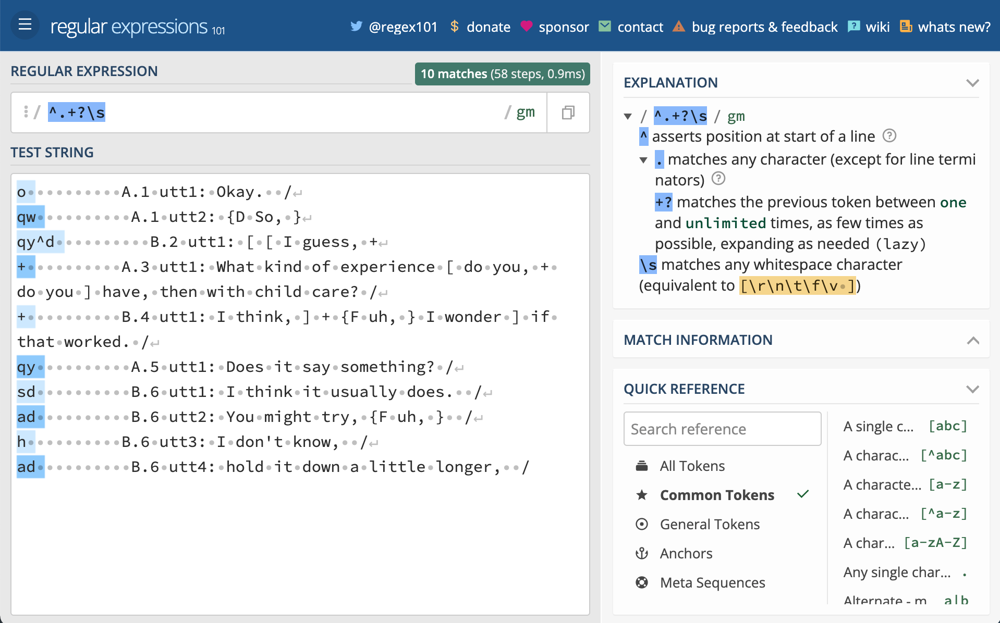
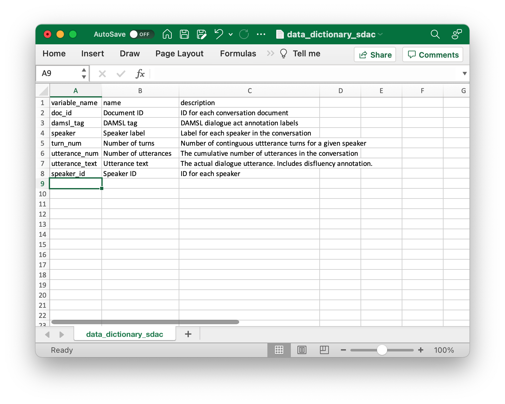

6 Curate data(sets)
The hardest bit of information to extract is the first piece.
— Robert Ferrigno
- what are some of the formats that data can take?
- what R programming strategies are used to read these formats into tabular, tidy dataset structures?
- what is the importance of maintaining modularity between data and data processing in a reproducible research project?
In this chapter we will now look at the next step in a text analysis project: data curation. That is, the process of converting the original data we acquire to a tidy dataset. As Acquired data can come in a wide variety of formats that depend largely on the richness of the metadata that is included, but also can reflect individual preferences. In this chapter we will consider three general types of formats: (1) unstructured data, (2) structured data, and (3) semi-structured data. Regardless of the file type and the structure of the data, it will be necessary to consider how to curate a dataset that such that the structure reflects the basic the unit of analysis that we wish to investigate (see Chapter 4, section 4.2. The resulting dataset will be the base from which we will work to further transform the dataset such that it aligns with the analysis method(s) that we will implement. And as in previous implementation steps, we will discuss the important role of documentation.
What: Regular Expressions
How: In the R Console pane load swirl, run swirl(), and follow prompts to select the lesson.
Why: To learn the basics of how to define search patterns to match strings, or characters, using Regular Expressions.
6.1 Unstructured
The bulk of text that is available in the wild is of the unstructured variety. Unstructured data is data that has not been organized to make the information contained within explicit. Explicit information that is included with data is called metadata. Metadata can be linguistic or non-linguistic in nature. So for unstructured data there is little to no metadata directly associated with the data. This information needs to be added or derived for the purposes of the research, either through manual inspection or (semi-)automatic processes. For now, however, our job is just to get the unstructured data into a structured format with a minimal set of metadata that we can derive from the resource.
As an example of an unstructured source of text data, let’s take a look at the Europarle Parallel Corpus, as introduced in Chapter 2 “Understanding data”. This data contains parallel texts (source and translated documents) from the European Parliamentary proceedings for some 21 European languages. Here we will focus in on the translation from Spanish to English (Spanish-English).
6.1.1 Orientation
With the data downloaded into the data/original/europarle/ directory we see that there are two files. One corresponding to the source language (Spanish) and one for the target language (English).
data/original/europarle/
├── europarl-v7.es-en.en
└── europarl-v7.es-en.esLooking at the first 10 lines of the first file, we can see that this is running text.
> Resumption of the session
> I declare resumed the session of the European Parliament adjourned on
Friday 17 December 1999, and I would like once again to wish you a
happy new year in the hope that you enjoyed a pleasant festive period.
> Although, as you will have seen, the dreaded 'millennium bug' failed
to materialise, still the people in a number of countries suffered a
series of natural disasters that truly were dreadful.
> You have requested a debate on this subject in the course of the next
few days, during this part-session.
> In the meantime, I should like to observe a minute' s silence, as a
number of Members have requested, on behalf of all the victims
concerned, particularly those of the terrible storms, in the various
countries of the European Union.
> Please rise, then, for this minute' s silence.
> (The House rose and observed a minute' s silence)
> Madam President, on a point of order.
> You will be aware from the press and television that there have been
a number of bomb explosions and killings in Sri Lanka.
> One of the people assassinated very recently in Sri Lanka was Mr
Kumar Ponnambalam, who had visited the European Parliament just a few
months ago.The only meta information that we can surmise from these files is the fact that we know one is the source language and one is the target language and that each sentence is aligned (parallel) with the lines in the other file.
So with what we have we’d like to create a data frame that has the seen in Table 6.1.
| type | sentence_id | sentence |
|---|---|---|
| Source | 1 | …sentence from source language |
| Target | 1 | …sentence from target language |
6.1.2 Tidy the data
To create this dataset structure lets’s read the files with the readtext() function from readtext package and assign them to a meaningful variable.
# Read the Europarle files
europarle_en <- # English target text
readtext::readtext("../data/original/europarle/europarl-v7.es-en.en", # path to the data
verbosity = 0) # don't show warnings
europarle_es <- # Spanish source text
readtext::readtext("../data/original/europarle/europarl-v7.es-en.es", # path to the data
verbosity = 0) # don't show warningsThe readtext() function can read many different types of file formats, from structured to unstructured. However, it depends in large part on the extension of the file to recognize what algorithm to use when reading a file. In this particular case the Europarle files do not have a typical extension (they have .en and .es). The readtext() function will treat them as plain text (.txt), but it will throw a warning message. To suppress the warning message you can add the verbosity = 0 argument.
Now there are a couple things to note about thbe europarle_en and europarle_es objects. If we inspect their structure, we will find that the dimensions of the data frame that is created is one row by two columns.
str(europarle_en) # inspect the structure of the object#> Classes 'readtext' and 'data.frame': 1 obs. of 2 variables:
#> $ doc_id: chr "europarl-v7.es-en.en"
#> $ text : chr "Resumption of the session\nI declare resumed the
session of the European Parliament adjourned on Friday 17 Dece"|
__truncated__Note that the str() function from base R is similar to glimpse(). However, glimpse() will attempt to show you as much data as possible. In this case since our column text is a very long character vector it will take a long time to render. I’ve chosen the str() function as it will automatically truncate the data.
The columns are doc_id and text. doc_id is created by readtext to index each file that is read in. The text column is where the text appears. The fact that we only have one row means that all the text in the entire file is contained in one cell! We will want to break this cell up into rows for each sentence, but for now let’s work with getting the columns to line up with our idealized dataset structure.
First let’s change the type of data frame that we are working with to a tibble. This will make sure we don’t accidentally print hundreds of lines to our R Markdown output and/ or the R Console. Then we will rename the doc_id column to type and change the value of that column to “Target” (for English) and “Source” (for Spanish).
europarle_target <-
europarle_en |> # readtext data frame
as_tibble() |> # convert to tibble
rename(type = doc_id) |> # rename doc_id to type
mutate(type = "Target") # change type value to 'Target'
europarle_source <-
europarle_es |> # readtext data frame
as_tibble() |> # convert to tibble
rename(type = doc_id) |> # rename doc_id to type
mutate(type = "Source") # change type value to 'Source'We have two objects now, one corresponding to the ‘Source’ and the other the ‘Target’ parallel texts. Let’s now join these two datasets, one on top of the other –that is, by rows. We wil use the bind_rows() function for this.
europarle <-
bind_rows(europarle_target, europarle_source)
str(europarle) # inspect the structure of the object#> tibble [2 × 2] (S3: tbl_df/tbl/data.frame)
#> $ type: chr [1:2] "Target" "Source"
#> $ text: chr [1:2] "Resumption of the session\nI declare resumed the session of the European Parliament adjourned on Friday 17 Dece"| __truncated__ "Reanudación del período de sesiones\nDeclaro reanudado el período de sesiones del Parlamento Europeo, interrump"| __truncated__The europarle dataset now has 2 columns, as before, and 2 rows –each corresponding to the distinct language types (Source/ Target).
Remember our goal is to create a dataset structure with three columns type, sentence_id, and sentence. At the moment we have type and text –where text has all of the sentences in for each type in a cell. So we are going to want to break up the text column into sentences, group the sentences that are created by type, and then number these sentences so that they are aligned between the distinct types.
To break up the text into sentences we are going to turn to the tidytext package. This package has a extremely useful function unnest_tokens() which provides an effective way to break text into various units (see ?tidytext::unnest_tokens for a full list of token types). Since I know from looking at the raw text that each sentence is on its own line, the best strategy to break the text into sentence units is to find a way to break each line into a new row in our dataset. To do this we need to use the token = "regex" (for Regular Expression) and use the pattern = "\\n" which tells R to look for carriage returns to use as the breaking criterion.
europarle_sentences <-
europarle |>
tidytext::unnest_tokens(output = sentence, # new column
input = text, # column to find text
token = "regex", # use a regular expression to break up the text
pattern = "\\n", # break text by carriage returns (returns after lines)
to_lower = FALSE) # do not lowercase the text
glimpse(europarle_sentences) # preview the structure#> Rows: 3,926,375
#> Columns: 2
#> $ type <chr> "Target", "Target", "Target", "Target", "Target", "Target", "…
#> $ sentence <chr> "Resumption of the session", "I declare resumed the session o…Regular Expressions are a powerful pattern matching syntax. They are used extensively in text manipulation and we will see them again and again. A good website to practice Regular Expressions is RegEx101. You can also install the regexplain package in R to get access to a useful RStudio Addin.
Our new europarle_sentences object is a data frame with almost 4 million rows! The final step to get to our envisioned dataset structure is to add the sentence_id column which will be calculated by grouping the data by type and then assigning a row number to each of the sentences in each group.
europarle_sentences_id <-
europarle_sentences |> # dataset
group_by(type) |> # group by type
mutate(sentence_id = row_number()) |> # add a row number for each sentence for each level of type
select(type, sentence_id, sentence) |> # select the relevant columns to keep
ungroup() |> # ungroup by type
arrange(sentence_id, type) # arrange the dataset
europarle_sentences_id |>
slice_head(n = 10) |>
knitr::kable(booktabs = TRUE)| type | sentence_id | sentence |
|---|---|---|
| Source | 1 | Reanudación del período de sesiones |
| Target | 1 | Resumption of the session |
| Source | 2 | Declaro reanudado el período de sesiones del Parlamento Europeo, interrumpido el viernes 17 de diciembre pasado, y reitero a Sus Señorías mi deseo de que hayan tenido unas buenas vacaciones. |
| Target | 2 | I declare resumed the session of the European Parliament adjourned on Friday 17 December 1999, and I would like once again to wish you a happy new year in the hope that you enjoyed a pleasant festive period. |
| Source | 3 | Como todos han podido comprobar, el gran “efecto del año 2000” no se ha producido. En cambio, los ciudadanos de varios de nuestros países han sido víctimas de catástrofes naturales verdaderamente terribles. |
| Target | 3 | Although, as you will have seen, the dreaded ‘millennium bug’ failed to materialise, still the people in a number of countries suffered a series of natural disasters that truly were dreadful. |
| Source | 4 | Sus Señorías han solicitado un debate sobre el tema para los próximos días, en el curso de este período de sesiones. |
| Target | 4 | You have requested a debate on this subject in the course of the next few days, during this part-session. |
| Source | 5 | A la espera de que se produzca, de acuerdo con muchos colegas que me lo han pedido, pido que hagamos un minuto de silencio en memoria de todas las víctimas de las tormentas, en los distintos países de la Unión Europea afectados. |
| Target | 5 | In the meantime, I should like to observe a minute’ s silence, as a number of Members have requested, on behalf of all the victims concerned, particularly those of the terrible storms, in the various countries of the European Union. |
6.1.3 Write dataset
At this point we have the curated dataset (europarle_sentences_id) in a tidy format. This dataset, however, is only in the current R session. We will want to write this dataset to disk so that in the next step of the text analysis workflow (transform data) we will be able to start work on this dataset and make changes as needed to fit our analysis needs.
We will leverage the project directory structure which has distinct directories for original/ and derived/ data(sets).
data/
├── derived
└── originalSince this dataset is derived by our work, we will added it to the derived/ directory. I’ll create a europarle/ directory just to keep things organized.
# Write the curated dataset to disk
fs::dir_create(path = "../data/derived/europarle/") # create the europarle directory
write_csv(x = europarle_sentences_id, # object to write
file = "../data/derived/europarle/europarle_curated.csv") # target file location/ nameThis is how the directory structure under the derived/ directory looks now.
data/
├── derived
│ └── europarle
│ └── europarle_curated.csv
└── original
└──europarle
├── europarl-v7.es-en.en
└── europarl-v7.es-en.es6.1.4 Summary
In this section we worked with unstructured data and looked at how to read the data into an R session and manipulate the data to form a tidy dataset with a few columns that we could derive based on the information we have about the corpus.
In our discussion we worked step by step to curate the Europarle Corpus, adding in intermediate steps for illustration purposes. However, in a more realistic case the code would most likely make more extensive use of piping (|>) to reduce the number of intermediate objects and make the code more legible. Below I’ve included a sample of what that code might look like.
# Read data and set up `type` column
europarle_en <-
readtext::readtext("../data/original/europarle/europarl-v7.es-en.en", # path to the data
verbosity = 0) |> # don't show warnings
as_tibble() |> # covert to tibble
rename(type = doc_id) |> # rename doc_id to type
mutate(type = "Target") # change type value to 'Target'
europarle_es <-
readtext::readtext("../data/original/europarle/europarl-v7.es-en.en", # path to the data
verbosity = 0) |> # don't show warnings
as_tibble() |> # covert to tibble
rename(type = doc_id) |> # rename doc_id to type
mutate(type = "Source") # change type value to 'Source'
# Join the datasets by rows
europarle <-
bind_rows(europarle_en, europarle_es)
# Segment the `text` column into `sentence` units
europarle <-
europarle |> # dataset
tidytext::unnest_tokens(output = sentence, # new column
input = text, # column to find text
token = "regex", # use a regular expression to break up the text
pattern = "\\n", # break text by carriage returns (returns after lines)
to_lower = FALSE) # do not lowercase the text
# Add `sentence_id` to each `type`
europarle <-
europarle |> # dataset
group_by(type) |> # group by type
mutate(sentence_id = row_number()) |> # add a row number for each sentence for each level of type
select(type, sentence_id, sentence) |> # select the relevant columns to keep
ungroup() |> # ungroup by type
arrange(sentence_id, type) # arrange the dataset
# Write the curated dataset to disk
fs::dir_create(path = "../data/derived/europarle/") # create the europarle directory
write_csv(x = europarle_sentences_id, # object to write
file = "../data/derived/europarle/europarle_curated.csv") # target file location/ name6.2 Structured
On the opposite side of the spectrum from unstructured data, structured data includes more metadata information –often much more. The association of metadata with the language to be analyzed means that the data has already be curated to some degree, therefore it is more apt to discuss structured data as a dataset. There are two questions, however, that need to be taken into account. One, logistical question, is what file format the dataset is in and how to we read it into R. And the second, more research-based, is whether the data is curated in a fashion that makes sense for the current research. Let’s look at each of these questions briefly and then get to a practical example.
There are file formats which are purposely designed for storing structured datasets. Some very common file types are .csv, .xml, .json, etc. The data within these files is explicitly organized. For example, in a .csv file, the dataset structure is represented by delimiting the columns and rows by commas.
column_1,column_2,column_3
row 1 value 1,row 1 value 2,row 1 value 3
row 2 value 1,row 2 value 2,row 2 value 3When read into R, the .csv file format is converted to a data frame with the appropriate structure.
| column_1 | column_2 | column_3 |
|---|---|---|
| row 1 value 1 | row 1 value 2 | row 1 value 3 |
| row 2 value 1 | row 2 value 2 | row 2 value 3 |
With an understanding of how the information is encoding into a file, we can now turn to considerations about how the original dataset is structure and how that structure is to be used for a given research project. The curation process that is reflected in a structured dataset may or may not initially align with the goals of our research either in terms of the type(s) of information or the unit of analysis of the structured dataset. The aim, then, is to take advantage of the information and curate it such that it does align.
As an example case of curating structured datasets, we will look at the song lyric datasets acquired from Last.fm in the previous chapter.
6.2.1 Orientation
The individual datasets from the Last.fm webscrape are found inside the data/original/lastfm/ directory, and includes the README.md documentation file.
data/
├── derived/
└── original/
└── lastfm/
├── README.md
├── country.csv
├── hip_hop.csv
├── lyrics.csv
├── metal.csv
├── pop.csv
└── rock.csvLet’s take a look at the structure of one of genres from these set of lyrics to familiarize ourselves with the structure.
lf_country <- read_csv(file = "../data/original/lastfm/country.csv") # read the csv file
lf_country |> # dataset
slice_head(n = 10) |> # first 10 observations
knitr::kable(booktabs = TRUE) # print pretty table?(caption)
| artist | song | lyrics | lyrics_url | genre |
|---|---|---|---|---|
| Johnny Cash | Hurt | I hurt myself todayTo see if I still feelI focus on the painThe only thing that’s realThe needle tears a holeThe old familiar stingTry to kill it all awayBut I remember everything | https://www.last.fm/music/Johnny+Cash/_/Hurt/+lyrics | country |
| Johnny Cash | Hurt | What have I becomeMy sweetest friendEveryone I know goes awayIn the endAnd you could have it allMy empire of dirtI will let you downI will make you hurt | https://www.last.fm/music/Johnny+Cash/_/Hurt/+lyrics | country |
| Johnny Cash | Hurt | I wear this crown of thornsUpon my liar’s chairFull of broken thoughtsI cannot repairBeneath the stains of timeThe feelings disappearYou are someone elseI am still right here | https://www.last.fm/music/Johnny+Cash/_/Hurt/+lyrics | country |
| Johnny Cash | Hurt | What have I becomeMy sweetest friendEveryone I know goes awayIn the endAnd you could have it allMy empire of dirtI will let you downI will make you hurt | https://www.last.fm/music/Johnny+Cash/_/Hurt/+lyrics | country |
| Johnny Cash | Hurt | If I could start againA million miles awayI would keep myselfI would find a way | https://www.last.fm/music/Johnny+Cash/_/Hurt/+lyrics | country |
| Johnny Cash | Ring of Fire | Love is a burning thingAnd it makes a fiery ringBound by wild desireI fell into a ring of fire | https://www.last.fm/music/Johnny+Cash/_/Ring+of+Fire/+lyrics | country |
| Johnny Cash | Ring of Fire | I fell into a burning ring of fireI went down, down, downAnd the flames went higherAnd it burns, burns, burnsThe ring of fire, the ring of fire | https://www.last.fm/music/Johnny+Cash/_/Ring+of+Fire/+lyrics | country |
| Johnny Cash | Ring of Fire | I fell into a burning ring of fireI went down, down, downAnd the flames went higherAnd it burns, burns, burnsThe ring of fire, the ring of fire | https://www.last.fm/music/Johnny+Cash/_/Ring+of+Fire/+lyrics | country |
| Johnny Cash | Ring of Fire | The taste of love is sweetWhen hearts like ours meetI fell for you like a child | https://www.last.fm/music/Johnny+Cash/_/Ring+of+Fire/+lyrics | country |
| Johnny Cash | Ring of Fire | Oh, but the fire went wild | https://www.last.fm/music/Johnny+Cash/_/Ring+of+Fire/+lyrics | country |
We can see a couple important characteristics from this preview of the dataset. First, we see the columns include artist, song, lyrics, lyrics_url, and genre. Second, we see that for each son the lyrics are segmented across multiple rows.
You may notice that in addition to the lyrics being separated by line, there appears to be an artifact from the original webscrape of this data which has individual lyric lines run in to the next. An example is the the lyrics “… hurt myself todayTosee if I still feelI focus…”. We will address this issue when it comes time to normalize the dataset in the transform process.
Given the fact that each of these files will include a genre label, that means that we will be able to read in each of these files in one operation and the distinction between genres will be recoverable. The next thing to think about is how we want to curate the dataset for our purposes. That is, what should the base structure of our curated dataset look like?
Let’s make the assumption that we want to have the columns artist, song, lyrics, and genre. The lyrics_url could be useful for documentation purposes, but for our text analysis it does not appear to be very relevant –so we will drop it. The second aspect concerns the observations. As it stands, the dataset the observations reflect the formatting of the website from which the lyrics were drawn. A potentially better organization would to have each observation correspond to all the lyrics for a single song. In this case we will want to collapse the current lyrics column’s values into lyrics for the entire song –maintaining the other measure for each of the other columns.
With this structure in mind, we are shooting for an idealized structure such as the one below.
| artist | song | lyrics | genre |
|---|---|---|---|
| Johnny Cash | Hurt | …lyrics for the song… | country |
| Johnny Cash | Ring of Fire | …lyrics for the song… | country |
6.2.2 Tidy the datasets
So our objectives are set, let’s first read in all the files. To do this we will again use the readtext() function. But instead of reading one file at a time we will read all the files of interest (those with the .csv extension) in one go. The readtext() function allows for the use of ‘wildcard’ notation (*) in the file(s) path to enable pattern matching.
So the files in the data/original/lastfm/ directory look like this.
../data/original/lastfm/README.md
../data/original/lastfm/country.csv
../data/original/lastfm/hip_hop.csv
../data/original/lastfm/lyrics.csv
../data/original/lastfm/metal.csv
../data/original/lastfm/pop.csv
../data/original/lastfm/rock.csvWe want all the files, except the REAME.md file. To do this we want our path to look like this:
../data/original/lastfm/*.csvThe wildcard * replaces the genre names and this effectively only matches files ending in .csv.
Great, that will capture the files we are looking for but when working with readtext() we will need to set the text_field argument to the column that corresponds to the text in our dataset. That is the lyrics column. Let’s go ahead and do this and convert the result to a tibble.
lastfm <-
readtext(file = "../data/original/lastfm/*.csv", # files to match using *.csv
text_field = "lyrics") |> # text column from the datasets
as_tibble() # convert to a tibble
glimpse(lastfm) # preview#> Rows: 2,172
#> Columns: 6
#> $ doc_id <chr> "country.csv.1", "country.csv.2", "country.csv.3", "country…
#> $ text <chr> "I hurt myself todayTo see if I still feelI focus on the pa…
#> $ artist <chr> "Johnny Cash", "Johnny Cash", "Johnny Cash", "Johnny Cash",…
#> $ song <chr> "Hurt", "Hurt", "Hurt", "Hurt", "Hurt", "Ring of Fire", "Ri…
#> $ lyrics_url <chr> "https://www.last.fm/music/Johnny+Cash/_/Hurt/+lyrics", "ht…
#> $ genre <chr> "country", "country", "country", "country", "country", "cou…Looking at the preview of the data frame we now have in lastfm there are a couple things to note. First, we see that a column doc_id has been added. This column is used by readtext() to index the file from which the data was read. In our case since we already have sufficient information to index our dataset, we can drop this column. Next we see that the lyrics column has been renamed to text. This is because we set this as the text_field when we read in the files. We can easily rename this column, but we’ll leave that for later.
Let’s go ahead and drop the columns that we have decided will not figure in our curated dataset. We can use the select() function to either select those columns we want to keep or by using the - operator, identify the columns we want to drop. The decision of ‘selecting’ or ‘deselecting’ is usually one of personal choice and code succinctness. In this case, we are dropping two columns and keeping four, so let’s deselect. I will assign the result to the same name as our current dataset, effectively overwriting that dataset.
lastfm <- # new dataset
select(lastfm, # original dataset
-doc_id, -lyrics_url) # drop these columns
glimpse(lastfm) # preview#> Rows: 2,172
#> Columns: 4
#> $ text <chr> "I hurt myself todayTo see if I still feelI focus on the painTh…
#> $ artist <chr> "Johnny Cash", "Johnny Cash", "Johnny Cash", "Johnny Cash", "Jo…
#> $ song <chr> "Hurt", "Hurt", "Hurt", "Hurt", "Hurt", "Ring of Fire", "Ring o…
#> $ genre <chr> "country", "country", "country", "country", "country", "country…Now let’s work to collapse the lyrics in the text column by each distinct artist, song, and genre combination. We will use the group_by() function to create artist song genre groupings and then use summarize() to create a new column in which the text field is collapsed into all the song lyrics for this grouping. Inside the summarize() function we use str_flatten() with the argument collapse = " " to collapse each observation in text leaving a single whitespace between the observations (otherwise each line would then be joined contiguously to the next).
lastfm <-
lastfm |> # dataset
group_by(artist, song, genre) |> # grouping
summarise(lyrics = str_flatten(text, collapse = " ")) |> # collapse text into the new column `lyrics` (dropping `text`)
ungroup() # unset the groupings
glimpse(lastfm) # preview#> Rows: 199
#> Columns: 4
#> $ artist <chr> "3 Doors Down", "3 Doors Down", "50 Cent", "a-ha", "ABBA", "Aer…
#> $ song <chr> "Here Without You", "Kryptonite", "In Da Club", "Take On Me", "…
#> $ genre <chr> "rock", "rock", "hip-hop", "pop", "pop", "rock", "country", "co…
#> $ lyrics <chr> "A hundred days have made me olderSince the last time that I sa…Let’s take a look at the first 5 observations from this collapsed dataset.
lastfm |> # dataset
slice_head(n = 5) |> # first 5 observations
knitr::kable(booktabs = TRUE) # print pretty table| artist | song | genre | lyrics |
|---|---|---|---|
| 3 Doors Down | Here Without You | rock | A hundred days have made me olderSince the last time that I saw your pretty faceA thousand lies have made me colderAnd I don’t think I can look at this the same But all the miles that separateDisappear now when I’m dreaming of your face I’m here without you, babyBut you’re still on my lonely mindI think about you, babyAnd I dream about you all the time I’m here without you, babyBut you’re still with me in my dreamsAnd tonight it’s only you and me, yeah The miles just keep rollin’As the people leave their way to say helloI’ve heard this life is overratedBut I hope that it gets better as we go, oh yeah, yeah I’m here without you, babyBut you’re still on my lonely mindI think about you, babyAnd I dream about you all the time I’m here without you, babyBut you’re still with me in my dreamsAnd tonight, girl, it’s only you and me Everything I know, and anywhere I go (Oh whoa)It gets hard but it won’t take away my love (Oh whoa)And when the last one fallsWhen it’s all said and doneIt gets hard but it won’t take away my love, whoa, oh, oh I’m here without you, babyBut you’re still on my lonely mindI think about you, babyAnd I dream about you all the time I’m here without you, babyBut you’re still with me in my dreamsAnd tonight, girl, it’s only you and me, yeahOh girl, oh oh |
| 3 Doors Down | Kryptonite | rock | Well I took a walk around the world to ease my troubled mindI left my body lying somewhere in the sands of timeWell I watched the world float to the dark side of the moonI feel there’s nothing I can do,yeah I watched the world float to the dark side of the moonAfter all I knew it had to be something to do with youI really don’t mind what happens now and thenAs long as you’ll be my friend at the end If I go crazy then will you still call me Superman?If I’m alive and well, will you be there a-holding my hand?I’ll keep you by my side with my superhuman mightKryptonite You called me strong, you called me weakBut still your secrets I will keepYou took for granted all the times I never let you downYou stumbled in and bumped your headIf not for me then you’d be deadI picked you up and put you back on solid ground If I go crazy then will you still call me Superman?If I’m alive and well, will you be there a-holding my hand?I’ll keep you by my side with my superhuman mightKryptonite If I go crazy then will you still call me Superman?If I’m alive and well, will you be there holding my hand?I’ll keep you by my side with my superhuman mightKryptoniteYeah! If I go crazy then will you still call me Superman?If I’m alive and well, will you be there a-holding my hand?I’ll keep you by my side with my superhuman mightKryptonite Oh, whoa, whoaOh, whoa, whoaOh, whoa, whoa |
| 50 Cent | In Da Club | hip-hop | Go, go, go, go, go, goGo, shortyIt’s your birthdayWe gon’ party like it’s your birthdayWe gon’ sip Bacardi like it’s your birthdayAnd you know we don’t give a fuck it’s not your birthday You can find me in the club, bottle full of bubLook, mami, I got the X, if you into takin’ drugsI’m into havin’ sex, I ain’t into makin’ loveSo come give me a hug, if you into getting rubbed You can find me in the club, bottle full of bubLook, mami, I got the X, if you into takin’ drugsI’m into havin’ sex, I ain’t into makin’ loveSo come give me a hug, if you into getting rubbed When I pull out up front, you see the Benz on dubsWhen I roll 20 deep, it’s 20 knives in the clubNiggas heard I fuck with Dre, now they wanna show me loveWhen you sell like Eminem, and the hoes they wanna fuckBut, homie, ain’t nothing change hoes down, G’s upI see Xzibit in the Cut, that nigga roll that weed upIf you watch how I move, you’ll mistake me for a playa or pimpBeen hit wit’ a few shells, but I don’t walk wit’ a limp (I’m ight)In the hood, in L.A, they saying ““50 you hot”“They like me, I want them to love me like they love ‘PacBut holla, in New York them niggas’ll tell ya I’m locoAnd the plan is to put the rap game in a choke holdI’m full of focused man, my money on my mindI got a mill out the deal and I’m still on the grindNow shorty said she feeling my style, she feeling my flowHer girlfriend wanna get bi and they ready to go You can find me in the club, bottle full of bubLook, mami, I got the X, if you into takin’ drugsI’m into havin’ sex, I ain’t into makin’ loveSo come give me a hug, if you into getting rubbed You can find me in the club, bottle full of bubLook, mami, I got the X, if you into takin’ drugsI’m into havin’ sex I, ain’t into makin’ loveSo come give me a hug, if you into getting rubbed My flow, my show brought me the doeThat bought me all my fancy thingsMy crib, my cars, my clothes, my jewelsLook, nigga, I done came up and I ain’t changeAnd you should love it, way more then you hate itNigga, you mad? I thought that you’d be happy I made itI’m that cat by the bar toasting to the good lifeYou that faggot ass nigga trying to pull me back right?When my jaws get to bumpin’ in the club it’s onI wink my eye at you, bitch, if she smiles she goneIf the roof on fire, let the motherfucker burnIf you talking ‘bout money, homie, I ain’t concernedI’m a tell you what Banks told me ’cuz go ’head switch the style upIf the niggas hate then let ’em hate and watch the money pile upOr we go upside they head wit’ a bottle of bubThey know where we fuckin’ be You can find me in the club, bottle full of bubLook, mami, I got the X, if you into takin’ drugsI’m into havin’ sex, I ain’t into makin’ love So come give me a hug, if you into getting rubbedYou can find me in the club, bottle full of bubLook, mami, I got the X, if you into takin’ drugsI’m into havin’ sex, I ain’t into makin’ loveSo come give me a hug, if you into getting rubbed Don’t try to act like you ain’t know where we been either, niggaWe in the club all the time, nigga, it’s about to pop off, niggaG-Unit |
| a-ha | Take On Me | pop | Talking awayI don’t know whatWhat to sayI’ll say it anywayToday is another day to find youShying awayOh, I’ll be coming for your love, okay? Take On Me (Take On Me)Take me on (Take On Me)I’ll be goneIn a day or two So needless to sayI’m odds and endsBut I’ll beStumbling awaySlowly learning that life is okaySay after meOh, it’s no better to be safe than sorry Take On Me (Take On Me)Take me on (Take On Me)I’ll be goneIn a day or two Oh, the things that you sayIs it life or just to playMy worries away?You’re all the things I’ve got to rememberYou’re shying awayI’ll be coming for you anyway Take On Me (Take On Me)Take me on (Take On Me)I’ll be goneIn a dayTake On Me (Take On Me)Take me on (Take On Me)I’ll be gone (Take On Me)In a day (Take me on, Take On Me)Take On Me (Take On Me)Take me on (Take On Me) |
| ABBA | Dancing Queen | pop | You can dance, you can jiveHaving the time of your life, oohSee that girl, watch that sceneDig in the Dancing Queen Friday night and the lights are lowLooking out for a place to goWhere they play the right music, getting in the swingYou come to look for a king Anybody could be that guyNight is young and the music’s highWith a bit of rock music, everything is fineYou’re in the mood for a dance And when you get the chance You are the Dancing QueenYoung and sweet, only seventeenDancing QueenFeel the beat from the tambourine, oh yeah You can dance, you can jiveHaving the time of your life, oohSee that girl, watch that sceneDig in the Dancing Queen You’re a teaser, you turn ’em onLeave them burning and then you’re goneLooking out for another, anyone will doYou’re in the mood for a dance And when you get the chance You are the Dancing QueenYoung and sweet, only seventeenDancing QueenFeel the beat from the tambourine, oh yeah You can dance, you can jiveHaving the time of your life, ohSee that girl, watch that sceneDig in the Dancing Queen Dig in the Dancing Queen |
At this point, the only thing left to do to get this dataset to align with our idealized dataset structure is to organize the column ordering (using select()). I will also arrange the dataset alphabetically by genre and artist (using arrange()).
lastfm <-
lastfm |> # original dataset
select(artist, song, lyrics, genre) |> # order columns (and rename `text` to `lyrics`)
arrange(genre, artist) # arrange rows by `genre` and `artist`
lastfm |> # curated dataset
slice_head(n = 5) |> # first 5 observations
knitr::kable(booktabs = TRUE) # print pretty table| artist | song | lyrics | genre |
|---|---|---|---|
| Alan Jackson | Little Bitty | Have a little love on a little honeymoonYou got a little dish and you got a little spoonA little bitty house and a little bitty yardA little bitty dog and a little bitty car Well, it’s alright to be little bittyA little hometown or a big old cityMight as well share, might as well smileLife goes on for a little bitty while A little bitty baby in a little bitty gownIt’ll grow up in a little bitty townA big yellow bus and little bitty booksIt all started with a little bitty look Well, it’s alright to be little bittyA little hometown or a big old cityMight as well share, might as well smileLife goes on for a little bitty while Heey You know you got a job and a little bitty checkA six pack of beer and a television setLittle bitty world goes around and aroundLittle bit of silence and a little bit of sound A good ol’ boy and a pretty little girlStart all over in a little bitty worldLittle bitty plan and a little bitty dreamIt’s all part of a little bitty schemeIt’s alright to be little bitty A little hometown or a big old cityMight as well share, might as well smileLife goes on for a little bitty whileIt’s alright to be little bittyA little hometown or a big old cityMight as well share, might as well smileLife goes on for a little bitty while Whoo | country |
| Alan Jackson | Remember When | Remember when I was young and so were youAnd time stood still and love was all we knewYou were the first so was IWe made love and then you criedRemember when Remember when we vowed the vowsAnd walk the walkGave our hearts, made the start and it was hardWe lived and learned, life threw curvesThere was joy, there was hurtRemember when Remember when old ones died and new were bornAnd life was changed, dissassembled, rearrangedWe came together, fell apartAnd broke each other’s heartsRemember when Remember when the sound of little feetWas the music we danced to week to weekBrought back the love, we found trustVowed we’d never give it upRemember when Remember when thirty seemed so oldNow,lookin’ back, it’s just a steppin’ stoneTo where we are, where we’ve beenSaid we’d do it all againRemember when Remember when we said when we turned grayWhen the children grow up and move awayWe won’t be sad, we’ll be gladFor all the life we’ve hadAnd we’ll remember when | country |
| Brad Paisley | Mud on the Tires | I’ve got some big newsThe bank finally came throughAnd I’m holdin’ the keys to a brand new ChevroletHave you been outside, it sure is a nice nightHow about a little test driveDown by the lake? There’s a place I know about where the dirt road runs outAnd we can try out the four-wheel driveCome on now what do you sayGirl, I can hardly wait to get a little mud on the tires ‘Cause it’s a good nightTo be out there soakin’ up the moonlightStake out a little piece of shore lineI’ve got the perfect place in mindIt’s in the middle of nowhere only one way to get thereYou got to get a little mud on the tires Moonlight on a duck blindCatfish on a trout lineSun sets about nine this time of yearWe can throw a blanket downCrickets singin’ in the backgroundAnd more stars that you can count on a night this clear I tell you what we need to doIs grab a sleepin’ bag or twoAnd build us a little campfireAnd then with a little luck we might just get stuckLet’s get a little mud on the tires ‘Cause it’s a good nightTo be out there soakin’ up the moonlightStake out a little piece of shore lineI’ve got the perfect place in mind It’s in the middle of nowhere only one way to get thereYou got to get a little mud on the tiresAnd then with a little luck we might just get stuckLet’s get a little mud on the tires | country |
| Carrie Underwood | Before He Cheats | Right now, he’s probably slow dancin’With a bleached-blond tramp and she’s probably gettin’ friskyRight now, he’s probably buyin’ her some fruity little drink’Cause she can’t shoot whiskeyRight now, he’s probably up behind her with a pool-stickShowin’ her how to shoot a comboAnd he don’t know I dug my key into the side of his pretty little souped-up four-wheel driveCarved my name into his leather seatsI took a Louisville slugger to both headlightsI slashed a hole in all four tiresMaybe next time he’ll think before he cheats Right now, she’s probably up singing someWhite-trash version of Shania karaokeRight now, she’s probably sayin’ ““I’m drunk”“And he’s a-thinkin’ that he’s gonna get luckyRight now, he’s probably dabbin’ onThree dollars worth of that bathroom PoloOh, and he don’t know That I dug my key into the side of his pretty little souped-up four-wheel driveCarved my name into his leather seatsI took a Louisville slugger to both headlightsI slashed a hole in all four tiresMaybe next time he’ll think before he cheats I might have saved a little trouble for the next girlA-’cause the next time that he cheatsOh, you know it won’t be on meNo, not on me ’Cause I dug my key into the side of his pretty little souped-up four-wheel driveCarved my name into his leather seatsI took a Louisville slugger to both headlightsI slashed a hole in all four tiresMaybe next time he’ll think before he cheats Oh, maybe next time he’ll think before he cheatsOh, before he cheatsOh-oh | country |
| Dierks Bentley | What Was I Thinkin’ | Becky was a beauty from south AlabamaHer daddy had a heart like a nine pound hammerThink he even did a little time in the slammerWhat was I thinkin’? She snuck out one night and met me by the front gateHer daddy came out wavin’ that 12-gaugeWe tore out the drive, he peppered my tailgateWhat was I thinkin’? Oh, I knew there’d be hell to payBut that crossed my mind a little too late ‘Cause I was thinkin’ ‘bout a little white tank topSittin’ right there in the middle by meI was thinkin’ ‘bout a long kissMan, just gotta get goin’ where the night might lead I know what I was feelin’But what was I thinkin’?What was I thinkin’? By the county line, the cops were nippin’ on our heelsPulled off the road and kicked it in four-wheelShut off the lights and tore through a cornfieldWhat was I thinkin’? Out the other side, she was hollerin’, ““Faster”“Took a dirt road, had the radio blastin’Hit the honky-tonk for a little close dancin’What was I thinkin’? Oh, I knew there’d be hell to payBut that crossed my mind a little too late ‘Cause I was thinkin’ ‘bout a little white tank topSittin’ right there in the middle by meI was thinkin’ ‘bout a long kissMan, just gotta get goin’ where the night might lead I know what I was feelin’But what was I thinkin’? When a mountain of a man with a”“Born to kill”” tattooTried to cut in, I knocked out his front toothWe ran outside, hood slidin’ like Bo DukeWhat was I thinkin’? I finally got her home at a half past two, laterDaddy’s in a lawn chair sittin’ on the drivewayPut it in park as he started my wayWhat was I thinkin’? Oh, what was I thinkin’?Oh, what was I thinkin’? Then she gave a ““Come and get me”” grinAnd like a bullet, we were gone again ‘Cause I was thinkin’ ‘bout a little white tank topSittin’ right there in the middle by meI was thinkin’ ‘bout a long kissMan, just gotta get goin’ where the night might leadI know what I was feelin’Yeah, I know what was I feelin’But what was I thinkin’? What was I thinkin’?I know what I was feelin’What was I thinkin’?Guess I was thinkin’ ’bout that tank topThose cutoffs | country |
6.2.3 Write dataset
We now have a curated dataset that we can write to disk. Again, as with the Europarle Corpus dataset we curated before, we will write this dataset to the data/derived/ directory –effectively ensuring that it is clear that this dataset was created by our project work.
fs::dir_create(path = "../data/derived/lastfm/") # create lastfm subdirectory
write_csv(lastfm,
file = "../data/derived/lastfm/lastfm_curated.csv") # write lastfm to disk and label as the curated datasetAnd here’s an overview of our new directory structure.
data/
├── derived/
│ └── lastfm/
│ └── lastfm_curated.csv
└── original/
└── lastfm/
├── README.md
├── country.csv
├── hip_hop.csv
├── lyrics.csv
├── metal.csv
├── pop.csv
└── rock.csv6.2.4 Summary
Again, to summarize, here is the code that will accomplish the steps we covered in this section on curating structured datasets.
# Read Last.fm lyrics and subset relevant columns
lastfm <-
readtext(file = "../data/original/lastfm/*.csv", # files to match using *.csv
text_field = "lyrics") |> # text column from the datasets
as_tibble() |> # convert to a tibble
select(-doc_id, -lyrics_url) # drop these columns
# Collapse text by artist, song, and genre grouping
lastfm <-
lastfm |> # dataset
group_by(artist, song, genre) |> # grouping
summarise(lyrics = str_flatten(text, collapse = " ")) |> # collapse text into the new column `lyrics` (dropping `text`)
ungroup() # unset the groupings
# Order columns and arrange rows
lastfm <-
lastfm |> # original dataset
select(artist, song, lyrics, genre) |> # order columns (and rename `text` to `lyrics`)
arrange(genre, artist) # arrange rows by `genre` and `artist`
# Write curated dataset to disk
fs::dir_create(path = "../data/derived/lastfm/") # create lastfm subdirectory
write_csv(lastfm,
file = "../data/derived/lastfm/lastfm_curated.csv") # write lastfm to disk and label as the curated dataset6.3 Semi-structured
At this point we have discussed curating unstructured data and structured datasets. Between these two extremes falls semi-structured data. And as the name suggests, it is a hybrid between unstructured and structured data. This means that there will be important structured metadata included with unstructured elements. The file formats and approaches to encoding the structured aspects of the data vary widely from resource to resource and therefore often requires more detailed attention to the structure of the data and often includes more sophisticated programming strategies to curate the data to produce a tidy dataset.
As an example we will work with the The Switchboard Dialog Act Corpus (SDAC) which extends the Switchboard Corpus with speech act annotation. (ADD CITATION)
The SDAC dialogues (swb1_dialogact_annot.tar.gz) are available as a free download from the LDC. To download, decompress, and organize this resource, follow the strategies discussed in “Acquire data” for Direct Downloads. The tadr package provides the tadr::get_compressed_data() function to accomplish this step.
6.3.1 Orientation
The main directory structure of the SDAC data looks like this:
data/
├── derived/
└── original/
└── sdac/
├── README
├── doc/
├── sw00utt/
├── sw01utt/
├── sw02utt/
├── sw03utt/
├── sw04utt/
├── sw05utt/
├── sw06utt/
├── sw07utt/
├── sw08utt/
├── sw09utt/
├── sw10utt/
├── sw11utt/
├── sw12utt/
└── sw13utt/The README file contains basic information about the resource, the doc/ directory contains more detailed information about the dialog annotations, and each of the following directories prefixed with sw... contain individual conversation files. Here’s a peek at internal structure of the first couple directories.
├── README
├── doc
│ └── manual.august1.html
├── sw00utt
│ ├── sw_0001_4325.utt
│ ├── sw_0002_4330.utt
│ ├── sw_0003_4103.utt
│ ├── sw_0004_4327.utt
│ ├── sw_0005_4646.uttLet’s take a look at the first conversation file (sw_0001_4325.utt) to see how it is structured.
>
*x*x*x*x*x*x*x*x*x*x*x*x*x*x*x*x*x*x*x*x*x*x*x*x*x*x*x*x*x*x*x*x*x*x*x*x*x*
>
*x*x*x*x*x*x*x*x*x*x*x*x*x*x*x*x*x*x*x*x*x*x*x*x*x*x*x*x*x*x*x*x*x*x*x*x*x*
> *x* *x*
> *x* Copyright (C) 1995 University of Pennsylvania *x*
> *x* *x*
> *x* The data in this file are part of a preliminary version of the
*x*
> *x* Penn Treebank Corpus and should not be redistributed. Any *x*
> *x* research using this corpus or based on it should acknowledge *x*
> *x* that fact, as well as the preliminary nature of the corpus. *x*
> *x* *x*
>
*x*x*x*x*x*x*x*x*x*x*x*x*x*x*x*x*x*x*x*x*x*x*x*x*x*x*x*x*x*x*x*x*x*x*x*x*x*
>
*x*x*x*x*x*x*x*x*x*x*x*x*x*x*x*x*x*x*x*x*x*x*x*x*x*x*x*x*x*x*x*x*x*x*x*x*x*
>
>
> FILENAME: 4325_1632_1519
> TOPIC#: 323
> DATE: 920323
> TRANSCRIBER: glp
> UTT_CODER: tc
> DIFFICULTY: 1
> TOPICALITY: 3
> NATURALNESS: 2
> ECHO_FROM_B: 1
> ECHO_FROM_A: 4
> STATIC_ON_A: 1
> STATIC_ON_B: 1
> BACKGROUND_A: 1
> BACKGROUND_B: 2
> REMARKS: None.
>
>
=========================================================================
>
>
> o A.1 utt1: Okay. /
> qw A.1 utt2: {D So, }
>
> qy^d B.2 utt1: [ [ I guess, +
>
> + A.3 utt1: What kind of experience [ do you, + do you ] have, then
with child care? /There are few things to take note of here. First we see that the conversation files have a meta-data header offset from the conversation text by a line of = characters. Second the header contains meta-information of various types. Third, the text is interleaved with an annotation scheme.
Some of the information may be readily understandable, such as the various pieces of meta-data in the header, but to get a better understanding of what information is encoded here let’s take a look at the README file. In this file we get a birds eye view of what is going on. In short, the data includes 1155 telephone conversations between two people annotated with 42 ‘DAMSL’ dialog act labels. The README file refers us to the doc/manual.august1.html file for more information on this scheme.
At this point we open the the doc/manual.august1.html file in a browser and do some investigation. We find out that ‘DAMSL’ stands for ‘Discourse Annotation and Markup System of Labeling’ and that the first characters of each line of the conversation text correspond to one or a combination of labels for each utterance. So for our first utterances we have:
o = "Other"
qw = "Wh-Question"
qy^d = "Declarative Yes-No-Question"
+ = "Segment (multi-utterance)"Each utterance is also labeled for speaker (‘A’ or ‘B’), speaker turn (‘1’, ‘2’, ‘3’, etc.), and each utterance within that turn (‘utt1’, ‘utt2’, etc.). There is other annotation provided withing each utterance, but this should be enough to get us started on the conversations.
Now let’s turn to the meta-data in the header. We see here that there is information about the creation of the file: ‘FILENAME’, ‘TOPIC’, ‘DATE’, etc. The doc/manual.august1.html file doesn’t have much to say about this information so I returned to the LDC Documentation and found more information in the Online Documentation section. After some poking around in this documentation I discovered that that meta-data for each speaker in the corpus is found in the caller_tab.csv file. This tabular file does not contain column names, but the caller_doc.txt does. After inspecting these files manually and comparing them with the information in the conversation file I noticed that the ‘FILENAME’ information contained three pieces of useful information delimited by underscores _.
*x*x*x*x*x*x*x*x*x*x*x*x*x*x*x*x*x*x*x*x*x*x*x*x*x*x*x*x*x*x*x*x*x*x*x*x*x*
FILENAME: 4325_1632_1519
TOPIC#: 323
DATE: 920323
TRANSCRIBER: glpThe first information is the document id (4325), the second and third correspond to the speaker number: the first being speaker A (1632) and the second speaker B (1519).
In sum, we have 1155 conversation files. Each file has two parts, a header and text section, separated by a line of = characters. The header section contains a ‘FILENAME’ line which has the document id, and ids for speaker A and speaker B. The text section is annotated with DAMSL tags beginning each line, followed by speaker, turn number, utterance number, and the utterance text. With this knowledge in hand, let’s set out to create a tidy dataset with the following column structure:
| doc_id | damsl_tag | speaker | turn_num | utterance_num | utterance_text | speaker_id |
|---|---|---|---|---|---|---|
| 4325 | o | A | 1 | 1 | Okay. / | 1632 |
| 4325 | qw | A | 1 | 2 | {D So, } | 1632 |
| 4325 | qy^d | B | 2 | 1 | [ [ I guess, + | 1519 |
6.3.2 Tidy the data
Let’s begin by reading one of the conversation files into R as a character vector using the read_lines() function from the readr package.
doc <-
read_lines(file = "../data/original/sdac/sw00utt/sw_0001_4325.utt") # read a single file as character vectorTo isolate the vector element that contains the document and speaker ids, we use str_detect() from the stringr package. This function takes two arguments, a string and a pattern, and returns a logical value, TRUE if the pattern is matched or FALSE if not. We can use the output of this function, then, to subset the doc character vector and only return the vector element (line) that contains digits_digits_digits with a regular expression. The expression combines the digit matching operator \\d with the + operator to match 1 or more contiguous digits. We then separate three groups of \\d+ with underscores _. The result is \\d+_\\d+_\\d+.
doc[str_detect(doc, pattern = "\\d+_\\d+_\\d+")] # isolate pattern#> [1] "FILENAME:\t4325_1632_1519"The stringr package has a handy function str_view() and str_view_all() which allow for interactive pattern matching. There is also an RStudio Addin with the regexplain package which also can be very helpful for developing regular expression syntax.
The next step is to extract the three digit sequences that correspond to the doc_id, speaker_a_id, and speaker_b_id. First we extract the pattern that we have identified with str_extract() and then we can break up the single character vector into multiple parts based on the underscore _. The str_split() function takes a string and then a pattern to use to split a character vector. It will return a list of character vectors.
doc[str_detect(doc, "\\d+_\\d+_\\d+")] |> # isolate pattern
str_extract(pattern = "\\d+_\\d+_\\d+") |> # extract the pattern
str_split(pattern = "_") # split the character vector#> [[1]]
#> [1] "4325" "1632" "1519"A list is a special object type in R. It is an unordered collection of objects whose lengths can differ (contrast this with a data frame which is a collection of objects whose lengths are the same –hence the tabular format). In this case we have a list of length 1, whose sole element is a character vector of length 3 –one element per segment returned from our split. This is a desired result in most cases as if we were to pass multiple character vectors to our str_split() function we don’t want the results to be conflated as a single character vector blurring the distinction between the individual character vectors. If we would like to conflate, or flatten a list, we can use the unlist() function.
doc[str_detect(doc, "\\d+_\\d+_\\d+")] |> # isolate pattern
str_extract(pattern = "\\d+_\\d+_\\d+") |> # extract the pattern
str_split(pattern = "_") |> # split the character vector
unlist() # flatten the list to a character vector#> [1] "4325" "1632" "1519"Let’s flatten the list in this case, as we have a single character vector, and assign this result to doc_speaker_info.
doc_speaker_info <-
doc[str_detect(doc, "\\d+_\\d+_\\d+")] |> # isolate pattern
str_extract(pattern = "\\d+_\\d+_\\d+") |> # extract the pattern
str_split(pattern = "_") |> # split the character vector
unlist() # flatten the list to a character vectordoc_speaker_info is now a character vector of length three. Let’s subset each of the elements and assign them to meaningful variable names so we can conveniently use them later on in the tidying process.
doc_id <- doc_speaker_info[1] # extract by index
speaker_a_id <- doc_speaker_info[2] # extract by index
speaker_b_id <- doc_speaker_info[3] # extract by indexThe next step is to isolate the text section extracting it from rest of the document. As noted previously, a sequence of = separates the header section from the text section. What we need to do is to index the point in our character vector doc where that line occurs and then subset the doc from that point until the end of the character vector. Let’s first find the point where the = sequence occurs. We will again use the str_detect() function to find the pattern we are looking for (a contiguous sequence of =), but then we will pass the logical result to the which() function which will return the element index number of this match.
doc |>
str_detect(pattern = "=+") |> # match 1 or more `=`
which() # find vector index#> [1] 31So for this file 31 is the index in doc where the = sequence occurs. Now it is important to keep in mind that we are working with a single file from the sdac/ data. We need to be cautious to not create a pattern that may be matched multiple times in another document in the corpus. As the =+ pattern will match =, or ==, or ===, etc. it is not implausible to believe that there might be a = character on some other line in one of the other files. Let’s update our regular expression to avoid this potential scenario by only matching sequences of three or more =. In this case we will make use of the curly bracket operators {}.
doc |>
str_detect(pattern = "={3,}") |> # match 3 or more `=`
which() # find vector index#> [1] 31We will get the same result for this file, but will safeguard ourselves a bit as it is unlikely we will find multiple matches for ===, ====, etc.
31 is the index for the = sequence, but we want the next line to be where we start reading the text section. To do this we increment the index by 1.
text_start_index <-
doc |>
str_detect(pattern = "={3,}") |> # match 3 or more `=`
which() # find vector index
text_start_index <- text_start_index + 1 # increment index by 1The index for the end of the text is simply the length of the doc vector. We can use the length() function to get this index.
text_end_index <- length(doc)We now have the bookends, so to speak, for our text section. To extract the text we subset the doc vector by these indices.
text <- doc[text_start_index:text_end_index] # extract text
head(text) # preview first lines of `text`#> [1] ""
#> [2] ""
#> [3] "o A.1 utt1: Okay. /"
#> [4] "qw A.1 utt2: {D So, }"
#> [5] ""
#> [6] "qy^d B.2 utt1: [ [ I guess, +"The text has some extra whitespace on some lines and there are blank lines as well. We should do some cleaning up before moving forward to organize the data. To get rid of the whitespace we use the str_trim() function which by default will remove leading and trailing whitespace from each line.
text <- str_trim(text) # remove leading and trailing whitespace
head(text) # preview first lines of `text`#> [1] ""
#> [2] ""
#> [3] "o A.1 utt1: Okay. /"
#> [4] "qw A.1 utt2: {D So, }"
#> [5] ""
#> [6] "qy^d B.2 utt1: [ [ I guess, +"To remove blank lines we will use the a logical expression to subset the text vector. text != "" means return TRUE where lines are not blank, and FALSE where they are.
text <- text[text != ""] # remove blank lines
head(text) # preview first lines of `text`#> [1] "o A.1 utt1: Okay. /"
#> [2] "qw A.1 utt2: {D So, }"
#> [3] "qy^d B.2 utt1: [ [ I guess, +"
#> [4] "+ A.3 utt1: What kind of experience [ do you, + do you ] have, then with child care? /"
#> [5] "+ B.4 utt1: I think, ] + {F uh, } I wonder ] if that worked. /"
#> [6] "qy A.5 utt1: Does it say something? /"Our first step towards a tidy dataset is to now combine the doc_id and each element of text in a data frame.
data <- data.frame(doc_id, text) # tidy format `doc_id` and `text`
slice_head(data, n = 5) |> # preview first lines of `text`
knitr::kable(booktabs = TRUE)| doc_id | text |
|---|---|
| 4325 | o A.1 utt1: Okay. / |
| 4325 | qw A.1 utt2: {D So, } |
| 4325 | qy^d B.2 utt1: [ [ I guess, + |
| 4325 | + A.3 utt1: What kind of experience [ do you, + do you ] have, then with child care? / |
| 4325 | + B.4 utt1: I think, ] + {F uh, } I wonder ] if that worked. / |
With our data now in a data frame, its time to parse the text column and extract the damsl tags, speaker, speaker turn, utterance number, and the utterance text itself into separate columns. To do this we will make extensive use of regular expressions. Our aim is to find a consistent pattern that distinguishes each piece of information from other other text in a given row of data$text and extract it.
The best way to learn regular expressions is to use them. To this end I’ve included a link to the interactive regular expression practice website regex101.
Open this site and copy the text below into the ‘TEST STRING’ field.
o A.1 utt1: Okay. /
qw A.1 utt2: {D So, }
qy^d B.2 utt1: [ [ I guess, +
+ A.3 utt1: What kind of experience [ do you, + do you ] have, then with child care? /
+ B.4 utt1: I think, ] + {F uh, } I wonder ] if that worked. /
qy A.5 utt1: Does it say something? /
sd B.6 utt1: I think it usually does. /
ad B.6 utt2: You might try, {F uh, } /
h B.6 utt3: I don't know, /
ad B.6 utt4: hold it down a little longer, /
Now manually type the following regular expressions into the ‘REGULAR EXPRESSION’ field one-by-one (each is on a separate line). Notice what is matched as you type and when you’ve finished typing. You can find out exactly what the component parts of each expression are doing by toggling the top right icon in the window or hovering your mouse over the relevant parts of the expression.
^.+?\s
[AB]\.\d+
utt\d+
:.+$As you can now see, we have regular expressions that will match the damsl tags, speaker and speaker turn, utterance number, and the utterance text. To apply these expressions to our data and extract this information into separate columns we will make use of the mutate() and str_extract() functions. mutate() will take our data frame and create new columns with values we match and extract from each row in the data frame with str_extract(). Notice that str_extract() is different than str_extract_all(). When we work with mutate() each row will be evaluated in turn, therefore we only need to make one match per row in data$text.
I’ve chained each of these steps in the code below, dropping the original text column with select(-text), and overwriting data with the results.
# Extract column information from `text`
data <-
data |> # current dataset
mutate(damsl_tag = str_extract(string = text, pattern = "^.+?\\s")) |> # extract damsl tags
mutate(speaker_turn = str_extract(string = text, pattern = "[AB]\\.\\d+")) |> # extract speaker_turn pairs
mutate(utterance_num = str_extract(string = text, pattern = "utt\\d+")) |> # extract utterance number
mutate(utterance_text = str_extract(string = text, pattern = ":.+$")) |> # extract utterance text
select(-text) # drop the `text` column
glimpse(data) # preview the data set#> Rows: 159
#> Columns: 5
#> $ doc_id <chr> "4325", "4325", "4325", "4325", "4325", "4325", "4325",…
#> $ damsl_tag <chr> "o ", "qw ", "qy^d ", "+ ", "+ ", "qy ", "sd ", "ad ", …
#> $ speaker_turn <chr> "A.1", "A.1", "B.2", "A.3", "B.4", "A.5", "B.6", "B.6",…
#> $ utterance_num <chr> "utt1", "utt2", "utt1", "utt1", "utt1", "utt1", "utt1",…
#> $ utterance_text <chr> ": Okay. /", ": {D So, }", ": [ [ I guess, +", ": What…One twist you will notice is that regular expressions in R require double backslashes (\\\\) where other programming environments use a single backslash (\\).
There are a couple things left to do to the columns we extracted from the text before we move on to finishing up our tidy dataset. First, we need to separate the speaker_turn column into speaker and turn_num columns and second we need to remove unwanted characters from the damsl_tag, utterance_num, and utterance_text columns.
To separate the values of a column into two columns we use the separate() function. It takes a column to separate and character vector of the names of the new columns to create. By default the values of the input column will be separated by non-alphanumeric characters. In our case this means the . will be our separator.
data <-
data |> # current dataset
separate(col = speaker_turn, # source column
into = c("speaker", "turn_num")) # separate speaker_turn into distinct columns: speaker and turn_num
glimpse(data) # preview the data set#> Rows: 159
#> Columns: 6
#> $ doc_id <chr> "4325", "4325", "4325", "4325", "4325", "4325", "4325",…
#> $ damsl_tag <chr> "o ", "qw ", "qy^d ", "+ ", "+ ", "qy ", "sd ", "ad ", …
#> $ speaker <chr> "A", "A", "B", "A", "B", "A", "B", "B", "B", "B", "B", …
#> $ turn_num <chr> "1", "1", "2", "3", "4", "5", "6", "6", "6", "6", "6", …
#> $ utterance_num <chr> "utt1", "utt2", "utt1", "utt1", "utt1", "utt1", "utt1",…
#> $ utterance_text <chr> ": Okay. /", ": {D So, }", ": [ [ I guess, +", ": What…To remove unwanted leading or trailing whitespace we apply the str_trim() function. For removing other characters we matching the character(s) and replace them with an empty string ("") with the str_replace() function. Again, I’ve chained these functions together and overwritten data with the results.
# Clean up column information
data <-
data |> # current dataset
mutate(damsl_tag = str_trim(damsl_tag)) |> # remove leading/ trailing whitespace
mutate(utterance_num = str_replace(string = utterance_num, pattern = "utt", replacement = "")) |> # remove 'utt'
mutate(utterance_text = str_replace(string = utterance_text, pattern = ":\\s", replacement = "")) |> # remove ': '
mutate(utterance_text = str_trim(utterance_text)) # trim leading/ trailing whitespace
glimpse(data) # preview the data set#> Rows: 159
#> Columns: 6
#> $ doc_id <chr> "4325", "4325", "4325", "4325", "4325", "4325", "4325",…
#> $ damsl_tag <chr> "o", "qw", "qy^d", "+", "+", "qy", "sd", "ad", "h", "ad…
#> $ speaker <chr> "A", "A", "B", "A", "B", "A", "B", "B", "B", "B", "B", …
#> $ turn_num <chr> "1", "1", "2", "3", "4", "5", "6", "6", "6", "6", "6", …
#> $ utterance_num <chr> "1", "2", "1", "1", "1", "1", "1", "2", "3", "4", "5", …
#> $ utterance_text <chr> "Okay. /", "{D So, }", "[ [ I guess, +", "What kind of…To round out our tidy dataset for this single conversation file we will connect the speaker_a_id and speaker_b_id with speaker A and B in our current dataset adding a new column speaker_id. The case_when() function does exactly this: allows us to map rows of speaker with the value “A” to speaker_a_id and rows with value “B” to speaker_b_id.
# Link speaker with speaker_id
data <-
data |> # current dataset
mutate(speaker_id = case_when( # create speaker_id
speaker == "A" ~ speaker_a_id, # speaker_a_id value when A
speaker == "B" ~ speaker_b_id # speaker_b_id value when B
))
glimpse(data) # preview the data set#> Rows: 159
#> Columns: 7
#> $ doc_id <chr> "4325", "4325", "4325", "4325", "4325", "4325", "4325",…
#> $ damsl_tag <chr> "o", "qw", "qy^d", "+", "+", "qy", "sd", "ad", "h", "ad…
#> $ speaker <chr> "A", "A", "B", "A", "B", "A", "B", "B", "B", "B", "B", …
#> $ turn_num <chr> "1", "1", "2", "3", "4", "5", "6", "6", "6", "6", "6", …
#> $ utterance_num <chr> "1", "2", "1", "1", "1", "1", "1", "2", "3", "4", "5", …
#> $ utterance_text <chr> "Okay. /", "{D So, }", "[ [ I guess, +", "What kind of…
#> $ speaker_id <chr> "1632", "1632", "1519", "1632", "1519", "1632", "1519",…We now have the tidy dataset we set out to create. But this dataset only includes one conversation file! We want to apply this code to all 1155 conversation files in the sdac/ corpus. The approach will be to create a custom function which groups the code we’ve done for this single file and then iterative send each file from the corpus through this function and combine the results into one data frame.
Here’s the custom function with some extra code to print a progress message for each file when it runs.
extract_sdac_metadata <- function(file) {
# Function: to read a Switchboard Corpus Dialogue file and extract meta-data
cat("Reading", basename(file), "...")
# Read `file` by lines
doc <- read_lines(file)
# Extract `doc_id`, `speaker_a_id`, and `speaker_b_id`
doc_speaker_info <-
doc[str_detect(doc, "\\d+_\\d+_\\d+")] |> # isolate pattern
str_extract("\\d+_\\d+_\\d+") |> # extract the pattern
str_split(pattern = "_") |> # split the character vector
unlist() # flatten the list to a character vector
doc_id <- doc_speaker_info[1] # extract `doc_id`
speaker_a_id <- doc_speaker_info[2] # extract `speaker_a_id`
speaker_b_id <- doc_speaker_info[3] # extract `speaker_b_id`
# Extract `text`
text_start_index <- # find where header info stops
doc |>
str_detect(pattern = "={3,}") |> # match 3 or more `=`
which() # find vector index
text_start_index <- text_start_index + 1 # increment index by 1
text_end_index <- length(doc) # get the end of the text section
text <- doc[text_start_index:text_end_index] # extract text
text <- str_trim(text) # remove leading and trailing whitespace
text <- text[text != ""] # remove blank lines
data <- data.frame(doc_id, text) # tidy format `doc_id` and `text`
# Extract column information from `text`
data <-
data |>
mutate(damsl_tag = str_extract(string = text, pattern = "^.+?\\s")) |> # extract damsl tags
mutate(speaker_turn = str_extract(string = text, pattern = "[AB]\\.\\d+")) |> # extract speaker_turn pairs
mutate(utterance_num = str_extract(string = text, pattern = "utt\\d+")) |> # extract utterance number
mutate(utterance_text = str_extract(string = text, pattern = ":.+$")) |> # extract utterance text
select(-text)
# Separate speaker_turn into distinct columns
data <-
data |> # current dataset
separate(col = speaker_turn, # source column
into = c("speaker", "turn_num")) # separate speaker_turn into distinct columns: speaker and turn_num
# Clean up column information
data <-
data |>
mutate(damsl_tag = str_trim(damsl_tag)) |> # remove leading/ trailing whitespace
mutate(utterance_num = str_replace(string = utterance_num, pattern = "utt", replacement = "")) |> # remove 'utt'
mutate(utterance_text = str_replace(string = utterance_text, pattern = ":\\s", replacement = "")) |> # remove ': '
mutate(utterance_text = str_trim(utterance_text)) # trim leading/ trailing whitespace
# Link speaker with speaker_id
data <-
data |> # current dataset
mutate(speaker_id = case_when( # create speaker_id
speaker == "A" ~ speaker_a_id, # speaker_a_id value when A
speaker == "B" ~ speaker_b_id # speaker_b_id value when B
))
cat(" done.\n")
return(data) # return the data frame object
}As a sanity check we will run the extract_sdac_metadata() function on a the conversation file we were just working on to make sure it works as expected.
extract_sdac_metadata(file = "../data/original/sdac/sw00utt/sw_0001_4325.utt") |>
glimpse()#> Reading sw_0001_4325.utt ... done.
#> Rows: 159
#> Columns: 7
#> $ doc_id <chr> "4325", "4325", "4325", "4325", "4325", "4325", "4325",…
#> $ damsl_tag <chr> "o", "qw", "qy^d", "+", "+", "qy", "sd", "ad", "h", "ad…
#> $ speaker <chr> "A", "A", "B", "A", "B", "A", "B", "B", "B", "B", "B", …
#> $ turn_num <chr> "1", "1", "2", "3", "4", "5", "6", "6", "6", "6", "6", …
#> $ utterance_num <chr> "1", "2", "1", "1", "1", "1", "1", "2", "3", "4", "5", …
#> $ utterance_text <chr> "Okay. /", "{D So, }", "[ [ I guess, +", "What kind of…
#> $ speaker_id <chr> "1632", "1632", "1519", "1632", "1519", "1632", "1519",…Looks good!
So now it’s time to create a vector with the paths to all of the conversation files. fs::dir_ls() interfaces with our OS file system and will return the paths to the files in the specified directory. We also add a pattern to match conversation files (regexp = \\.utt$) so we don’t accidentally include other files in the corpus. recurse set to TRUE means we will get the full path to each file.
../data/original/sdac/sw00utt/sw_0001_4325.utt
../data/original/sdac/sw00utt/sw_0002_4330.utt
../data/original/sdac/sw00utt/sw_0003_4103.utt
../data/original/sdac/sw00utt/sw_0004_4327.utt
../data/original/sdac/sw00utt/sw_0005_4646.utt
../data/original/sdac/sw00utt/sw_0006_4108.utto pass each conversation file in the vector of paths to our conversation files iteratively to the extract_sdac_metadata() function we use map(). This will apply the function to each conversation file and return a data frame for each. bind_rows() will then join the resulting data frames by rows to give us a single tidy dataset for all 1155 conversations. Note there is a lot of processing going on here we have to be patient.
# Read files and return a tidy dataset
sdac <-
sdac_files |> # pass file names
map(extract_sdac_metadata) |> # read and tidy iteratively
bind_rows() # bind the results into a single data frameWe now see that we have 223606 observations (individual utterances in this dataset).
glimpse(sdac) # preview complete curated dataset#> Rows: 223,606
#> Columns: 7
#> $ doc_id <chr> "4325", "4325", "4325", "4325", "4325", "4325", "4325",…
#> $ damsl_tag <chr> "o", "qw", "qy^d", "+", "+", "qy", "sd", "ad", "h", "ad…
#> $ speaker <chr> "A", "A", "B", "A", "B", "A", "B", "B", "B", "B", "B", …
#> $ turn_num <chr> "1", "1", "2", "3", "4", "5", "6", "6", "6", "6", "6", …
#> $ utterance_num <chr> "1", "2", "1", "1", "1", "1", "1", "2", "3", "4", "5", …
#> $ utterance_text <chr> "Okay. /", "{D So, }", "[ [ I guess, +", "What kind of…
#> $ speaker_id <chr> "1632", "1632", "1519", "1632", "1519", "1632", "1519",…6.3.3 Write datasets
Again as in the previous cases, we will write this dataset to disk to prepare for the next step in our text analysis project.
fs::dir_create(path = "../data/derived/sdac/") # create sdac subdirectory
write_csv(sdac,
file = "../data/derived/sdac/sdac_curated.csv") # write sdac to disk and label as the curated datasetThe directory structure now looks like this:
data/
├── derived/
│ └── sdac/
│ └── sdac_curated.csv
└── original/
└── sdac/
├── README
├── doc/
├── sw00utt/
├── sw01utt/
├── sw02utt/
├── sw03utt/
├── sw04utt/
├── sw05utt/
├── sw06utt/
├── sw07utt/
├── sw08utt/
├── sw09utt/
├── sw10utt/
├── sw11utt/
├── sw12utt/
└── sw13utt/6.3.4 Summary
In this section we looked at semi-structured data. This type of data often requires the most work to organize into a tidy dataset. We continued to work with many of the R programming strategies introduced to this point in the coursebook. We also made more extensive use of regular expressions to pick out information from a semi-structured document format.
To round out this section I’ve provided a code summary of the steps involved to conduct the curation of the Switchboard Dialogue Act Corpus files. Note that I’ve added the extract_sdac_metadata() custom function to a file called curate_functions.R and sourced this file. This will make the code more succinct and legible here, as well in your own research projects.
# Source the `extract_sdac_metadata()` function
source("../functions/curate_functions.R")
# Get list of the corpus files (.utt)
sdac_files <-
fs::dir_ls(path = "../data/original/sdac/", # source directory
recurse = TRUE, # traverse all sub-directories
type = "file", # only return files
regexp = "\\.utt$") # only return files ending in .utt
# Read files and return a tidy dataset
sdac <-
sdac_files |> # pass file names
map(extract_sdac_metadata) |> # read and tidy iteratively
bind_rows() # bind the results into a single data frame
# Write curated dataset to disk
fs::dir_create(path = "../data/derived/sdac/") # create sdac subdirectory
write_csv(sdac,
file = "../data/derived/sdac/sdac_curated.csv") # write sdac to disk and label as the curated dataset6.4 Documentation
At this stage we again want to ensure that the data that we have derived is well-documented. Where in the data acquisition process the documentation was focused on the sampling frame, curated datasets require documentation that describes the structure of the now rectangular dataset and its attributes. This documentation is known as a data dictionary. At the curation stage this documentation often contains the following information (“How to Make a Data Dictionary” 2021):
- names of the variables (as they appear in the dataset)
- human-readable names for the variables
- short prose descriptions of the variables, including units of measurement (where applicable)
A data dictionary will take the format of a table and can be stored in a tabular-oriented file format (such as .csv). It is often easier to work with a spreadsheet to create this documentation. I suggest creating a .csv file with the basic structure of the documentation. You can do this however you choose, but I suggest using something along these lines as seen in the following custom function, data_dic_starter().
data_dic_starter <- function(data, file_path) {
# Function:
# Creates a .csv file with the basic information
# to document a curated dataset
tibble(variable_name = names(data), # column with existing variable names
name = "", # column for human-readable names
description = "") |> # column for prose description
write_csv(file = file_path) # write to disk
}Running this function in the R Console on the curated dataset (in this case the sdac dataset), will provide this structure.
| variable_name | name | description |
|---|---|---|
| doc_id | ||
| damsl_tag | ||
| speaker | ||
| turn_num | ||
| utterance_num | ||
| utterance_text | ||
| speaker_id |
The resulting .csv file can then be opened with spreadsheet software (such as MS Excel, Google Sheets, etc.) and edited.1

Save this file as a .csv file and replace the original starter file. Note that it is important to use a plain-text file format for the official documentation file and avoid proprietary formats to ensure open accessibility and future compatibility.2
Our data/derived/ directory now looks like this.
data/
└── derived/
└── sdac/
├── sdac_curated.csv
└── data_dictionary_sdac.csvSummary
In this chapter we looked at the process of structuring data into a dataset. This included a discussion on three main types of data –unstructured, structured, and semi-structured. The level of structure of the original data(set) will vary from resource to resource and by the same token so will the file format used to support the level of meta-information included. The results from our data curation resulted in a curated dataset that is saved separate from the original data to maintain modularity between what the data(set) looked like before we intervene and afterwards. In addition to the code we use to derived the curated dataset’s structure, we also include a data dictionary which documents the names of the variables and provides sufficient description of these variables so that it is clear what our dataset contains.
It is important to recognized that this curated dataset will form the base for the next step in our text analysis project and the last step in data preparation for analysis: dataset transformation. This last step in preparing data for analysis is to convert this curated dataset into a dataset that is directly aligned with the research aims (i.e. analysis method(s)) of the project. Since there can be multiple analysis approaches applied the original data in a research project, this curated dataset serves as the point of departure for each of the subsequent datasets derived from the transformational steps.
Activities
What: Regular Expressions and reshaping datasets
How: Read Recipe 7 and participate in the Hypothes.is online social annotation.
Why: To how regular expressions are helpful in developing strategies for matching, extracting, and/ or replacing patterns in character sequences and how to change the dimensions of a dataset to either expand or collapse columns or rows.
What: Regular Expressions and reshaping datasets
How: Clone, fork, and complete the steps in Lab 7.
Why: To gain experience working with coding strategies reshaping data using tidyverse functions and regular expressions, to practice reading/ writing data from/ to disk, and to implement organizational strategies for organizing and documenting a dataset in reproducible fashion.
Questions
- …
- …
- …
- …
Note on RStudio Cloud you will need to download the .csv file and, after editing, upload the complete data dictionary file. Make sure to save the edited file as a .csv file.↩︎
Although based on spreadsheets, Broman and Woo (2018) outlines many of the best for good data organization regardless of the technology.↩︎